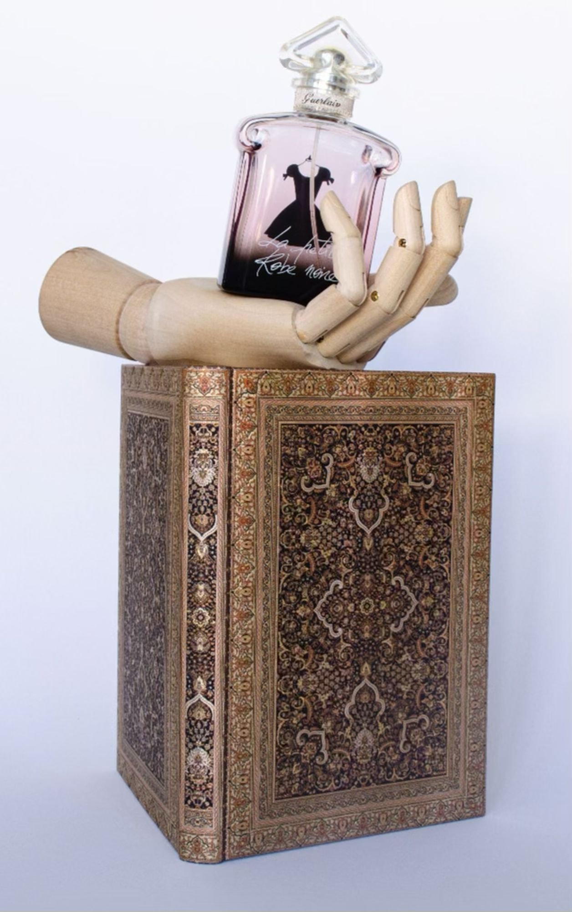
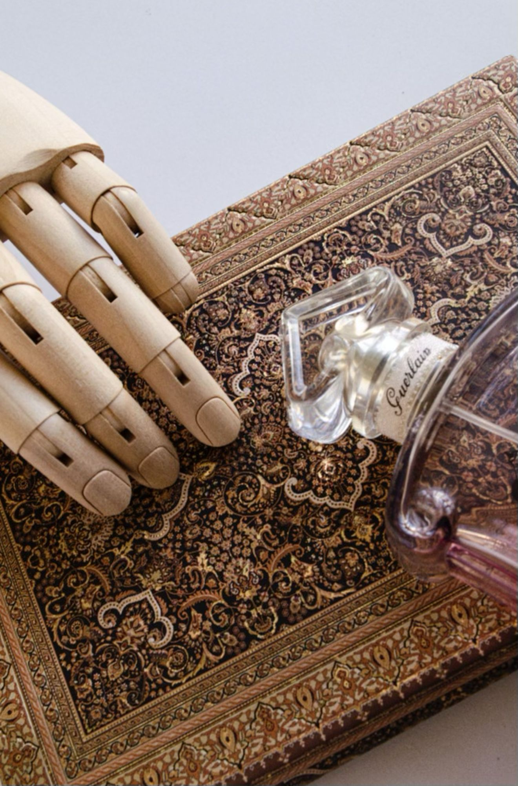
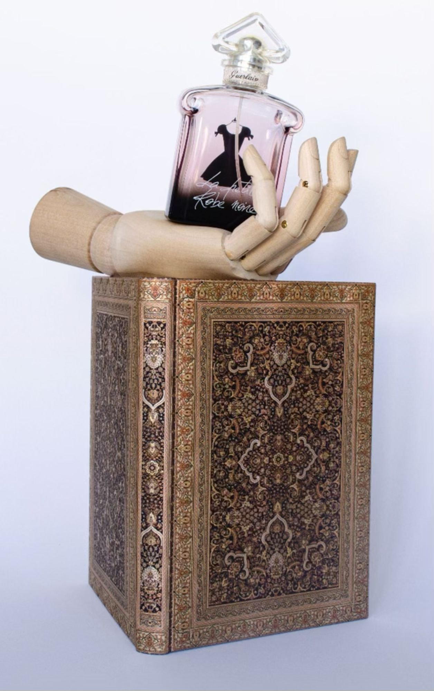
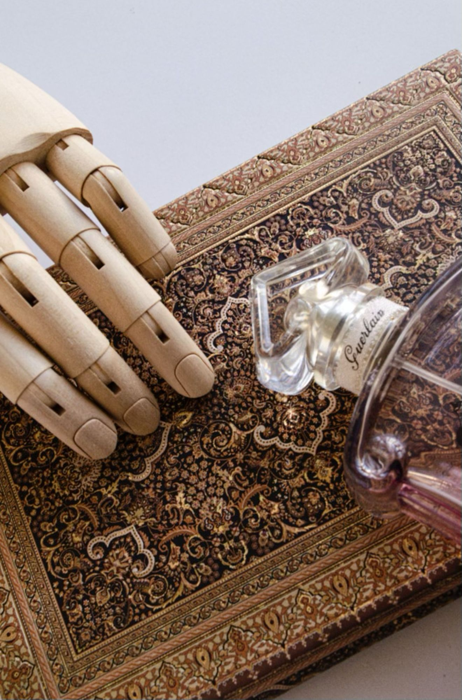
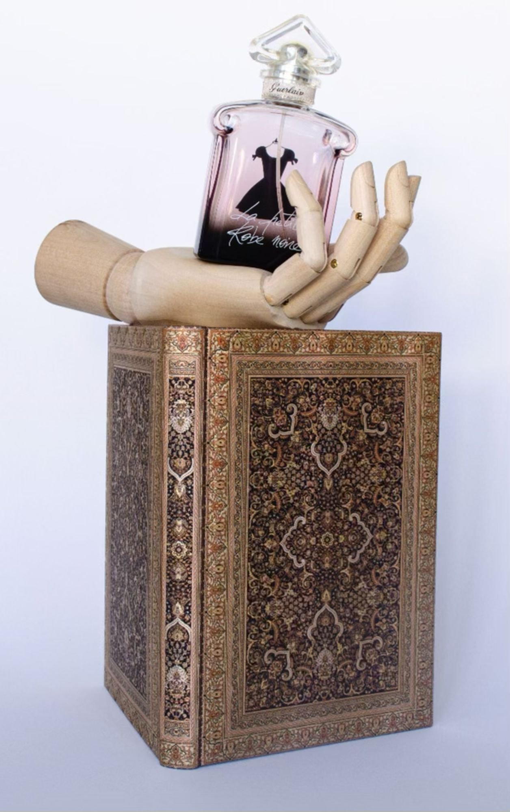
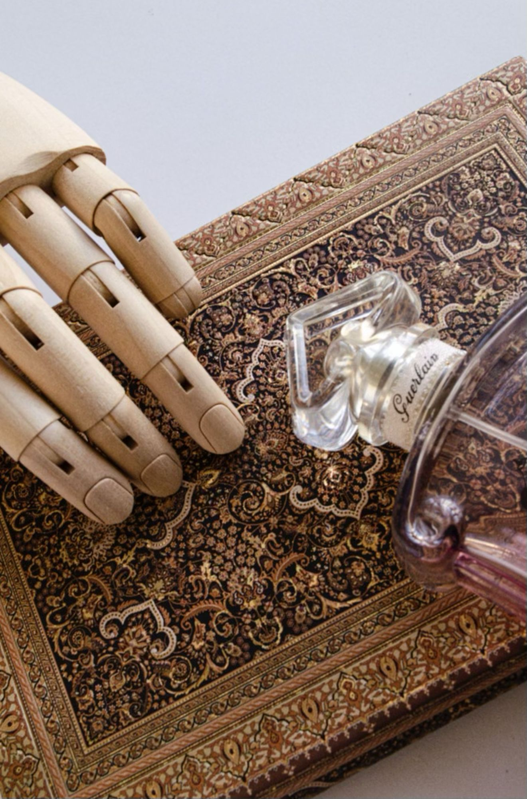

Réalisation de prises de vues sur le thème de l’équilibre de trois objets. L’objectif est de trouver le bon balancement entre l’ISO, le temps de pose et la focale.
Réalisation d’une reproduction du photographe Alexandre Rodtchenko - Girl with a Leica. J’ai essayé de trouver un moyen de jouer avec les ombres et la lumière pour créer cet effet de motif linéaire.

